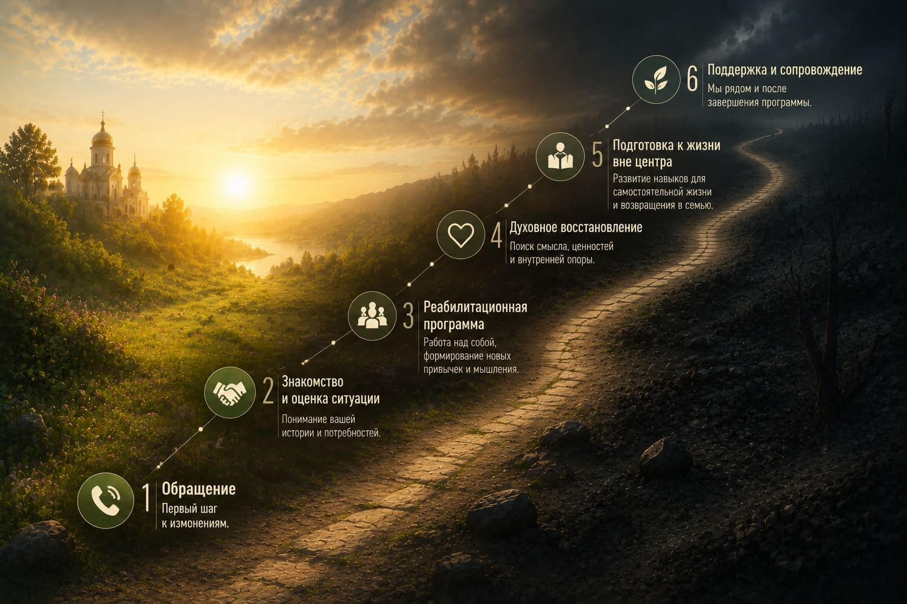
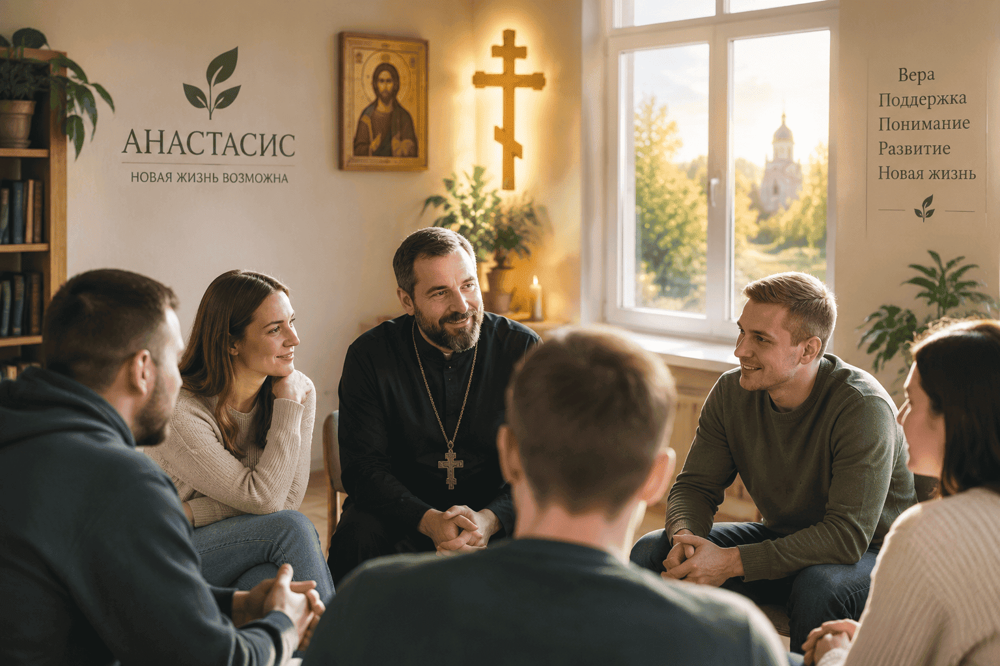

+375 29 784 18 20
|
+375 29 557 86 41
Путь восстановления — это постепенный процесс, который помогает человеку изменить привычный образ жизни, восстановить внутреннее равновесие и подготовиться к возвращению в семью и общество.
В центре «Анастасис» человек получает поддержку специалистов, находится в безопасной среде и проходит путь восстановления шаг за шагом.

Реабилитация — это не только прекращение употребления, а постепенное восстановление человека и его жизненных навыков.
На протяжении программы человек учится лучше понимать себя, работать с трудностями и формировать новые привычки вместе со специалистами центра.
Важную роль играет сама среда восстановления — спокойная атмосфера, поддержка и возможность полностью сосредоточиться на изменениях.
Программа реабилитации рассчитана минимум на 3 месяца, поскольку восстановление требует постепенного процесса и полного погружения в новую среду.
За это время человек получает возможность работать со специалистами, участвовать в программе восстановления и постепенно формировать новые взгляды, привычки и навыки.
Чем дольше человек находится в поддерживающей атмосфере центра и продолжает работу над собой, тем больше возможностей закрепить положительные изменения и подготовиться к дальнейшей жизни.
Процесс восстановления проходит постепенно. Каждый этап помогает человеку двигаться от адаптации к осознанным изменениям и подготовке к дальнейшей жизни.
Первое знакомство с центром, его правилами и новым распорядком жизни. Формирование доверия и понимание дальнейшего пути восстановления.
Восстановление эмоционального состояния, режима и готовности глубже работать над собой.
Работа со специалистами, участие в группах и изучение причин, которые влияли на формирование зависимости.
Формирование новых навыков, ответственности и понимания дальнейших шагов после завершения программы.
В программе реабилитации внимание уделяется разным сторонам жизни человека: физическому состоянию, внутреннему миру, отношениям и духовным ценностям.
Био-психо-социо-духовный подход помогает не только изменить привычки, но и постепенно восстановить важные сферы жизни.
Особое значение имеет духовная составляющая. Центр «Анастасис» находится при монастыре и церкви, поэтому человек получает возможность найти внутреннюю опору, переосмыслить ценности и взглянуть на свою жизнь по-новому.
В процессе реабилитации человек получает поддержку специалистов центра, участвует в индивидуальной и групповой работе, учится лучше понимать себя, свои чувства и причины, которые привели к зависимости.
В центре используются различные направления помощи, включая принципы программы «12 шагов», групповые занятия и духовное сопровождение. Духовный куратор помогает человеку обратить внимание на внутренний мир, переосмыслить жизненные ценности, найти опору и постепенно двигаться по пути восстановления.
Главная задача программы — не только помочь человеку отказаться от прежнего образа жизни, но и создать условия для глубоких изменений, восстановления личности и формирования устойчивых навыков для дальнейшей жизни.
